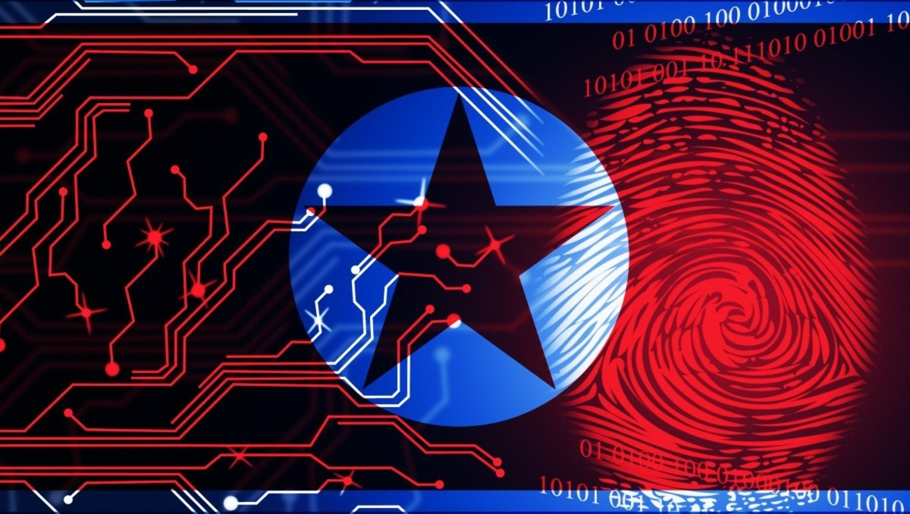

Operation Lucky Dragon
Emmanuel Loria
Operation Lucky Dragon

Description of the Cyber Operation
Operation Lucky Dragon is an ultra-covert cyber operation conducted by South Korea's National Cyber Command in concert with the U.S. Cyber Command under the guise of a naval exercise. Operation Lucky Dragon aims to intrude into North Korea's naval communications systems to destroy key sensors providing maritime surveillance in a strategic portion of international waters disputed between both nations.
Offensive Cyber Strategy
Main Objective
It starts with South Korea developing an infiltration of North Korean naval networks through the application of a mix of phishing attacks and zero-day exploits in order to infiltrate the central command system. This will include, but is not confined to, strategic strikes against key markers like radar systems, control centers for unmanned underwater vehicles, and naval communication satellites.
Cyber Tools
- Zero-Day Exploits: Custom malware is developed to exploit vulnerabilities in North Korea’s naval command software.
- APTs: South Korea's cyber units, utilizing APT methods, gain long-term access to communication channels.
- Signal Jamming: Once inside, South Korea’s cyber units execute temporary signal jamming to disrupt critical naval operations during peak military exercises.
Legal Issues Governing the Authorized Conduct of Cyber Operations
- Violation of Sovereignty: Unauthorized intrusion into another nation's networks breaches international law principles of sovereignty.
- Espionage Laws: While espionage is not explicitly prohibited under international law, it violates domestic laws of the targeted nation.
- Attribution and Accountability: Challenges in attributing cyberattacks complicate holding perpetrators accountable under international legal frameworks.
Summary of Tools, Techniques, Technology, and Data Used
Kimsuky employs a range of sophisticated tools and techniques, including:
- Command and Control (C2) Channels: Uses HTTP, HTTPS, and FTP protocols for communication and data exfiltration.
- Credential Harvesting: Utilizes keyloggers, phishing, and malware to steal login credentials from web browsers and email accounts.
- Malware Development: Creates custom malware like BabyShark and AppleSeed to infiltrate systems and avoid detection.
- Social Engineering: Crafts personalized phishing emails to increase the likelihood of successful compromise.
- Exfiltration Methods: Uses cloud storage services and compromised email accounts to exfiltrate stolen data.
Defensive Cyber Strategy
To defend against operations like Kimsuky, South Korea must implement a robust cybersecurity framework.
Recommended Cyber Tools/Weapons
- Advanced Threat Protection (ATP) Systems
- Security Awareness Training Programs
- Endpoint Detection and Response (EDR) Solutions
Purpose of Each Cyber Tool/Weapon
- Advanced Threat Protection Systems: Detect and prevent sophisticated cyber threats, including zero-day exploits and advanced malware.
- Security Awareness Training Programs: Educate employees on recognizing and responding to phishing attempts and social engineering tactics.
- Endpoint Detection and Response Solutions: Monitor endpoints for suspicious activities, enabling rapid detection and response to threats.
Legal Issues Governing the Authorized Conduct of Cyber Operations
- Data Privacy Regulations: Compliance with domestic and international laws regarding user data and privacy during monitoring activities.
- Defensive Cyber Operations (DCO): Must align with international law, ensuring defensive measures are proportionate and necessary.
- Information Sharing Agreements: Legal frameworks governing the sharing of threat intelligence with other nations and organizations.
Summary of Tools, Techniques, Technology, and Data
- Network Monitoring and Anomaly Detection: Continuous surveillance of network traffic to identify unusual patterns indicative of cyberattacks.
- Multi-Factor Authentication (MFA): Strengthens security by requiring additional verification steps for access to sensitive systems.
- Patch Management and Vulnerability Assessments: Regularly updating software and systems to protect against known vulnerabilities exploited by groups like Kimsuky.
- Incident Response Planning: Establishing protocols to respond effectively to cyber incidents, minimizing damage and recovery time.
Conclusion
Operation Kimsuky highlights the persistent cyber threats posed by nation-state actors like North Korea. By understanding the offensive strategies and tools used, South Korea can develop and implement effective defensive measures to protect its critical infrastructure and sensitive information. International collaboration and adherence to legal frameworks are essential in addressing and mitigating such cyber threats.